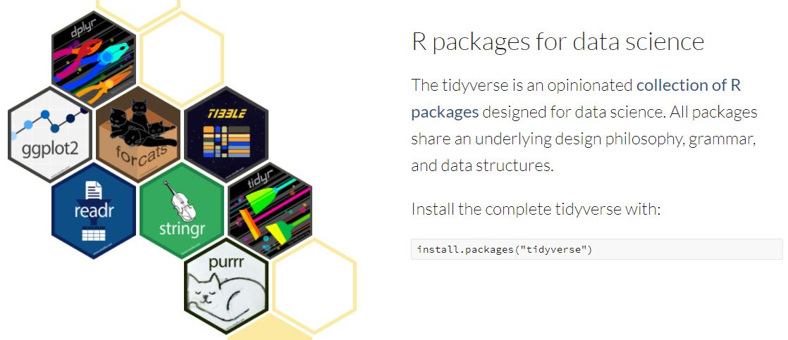

Chapter 5 Data science and tidyverse
tidyverse (https://www.tidyverse.org/)는 데이터 사이언스를 위한 R 기반의 독창적인 패키지들의 모음입니다. Rstudio의 핵심 전문가인 해들리위컴이 (Hadley Wickham) 중심이 되어 만들어 졌으며 기존의 툴보다 쉽고 효율적으로 데이터 분석을 수행할 수 있습니다.

5.1 Tidy data structure
데이터의 변수와 값을 구분하는 일은 적절한 데이터 분석을 위해 필수적인 과정입니다. 특히 복잡하고 사이즈가 큰 데이터일 경우는 더욱 중요할 수 있으나 경험에 의존해서 구분을 하는 것이 대부분 입니다. Tidy data는 이러한 변수와 값의 명확한 구분과 활용을 위한 데이터 구조중 하나 입니다 (Hadley Wickham. Tidy data. The Journal of Statistical Software, vol. 59, 2014). Long형 데이터로 알려져 있기도 합니다. 참고로 Wide형 데이터의 경우 샘플 데이터가 늘어날수록 row에 쌓이고 새로운 변수는 column에 쌓이는 방식으로 데이터가 확장되는 형태 입니다. 엑셀에서 볼 수 있는 일반적인 형식으로 다음 그림과 같습니다.

Long형 데이터의 경우 ID, variable, value 세가지 변수만 기억하면 되겠습니다. 위 wide형 데이터 경우를 보면 ID, variable, 그리고 value 이 세가지 요인이 주요 구성 요소임을 알 수 있습니다. Long형으로 변환할 경우 샘플을 참조할 수 있는 어떤 변수 (variable)도 ID가 될 수 있으며 2개 이상의 변수가 ID로 지정될 수 있습니다. 참고로 ID를 지정할 경우 해당 ID는 가능하면 중복되지 않는 값들을 갖는 변수를 사용해야 식별자로서 기능을 적절히 수행할 수 있습니다. Long형을 사용할 경우 데이터의 변수가 늘어나도 행의 수만 늘어나므로 코딩의 일관성과 변수들의 그룹을 만들어서 분석하는 등의 장점이 있습니다. 아래는 새로운 변수 F가 추가될 때 long 형 데이터에 데이터가 추가되는 경우를 나타낸 그림 입니다.

일반적으로 얻어지는 데이터의 형태는 wide형이며 이를 Long형으로 변환하기 위해서는 tidyverse 패키지에 속한 tidyr 패키지의 pivot_longer와 pivot_wider를 사용합니다. 또한 reshape2 패키지의 melt함수와 그 반대의 경우 dcast 함수를 사용할 수도 있습니다. 본 강의에서는 tidyr 패키지를 사용합니다. wide형 데이터를 long형으로 변환하는 작업을 melting 이라고 합니다.

airquality 데이터는 전형적인 wide형 데이터로 특정 날짜에 네 개의 변수에 해당하는 값들을 측정했습니다. 이 데이터를 long형으로 바꿀 경우 ID를 날짜로 하면 데이터들을 식별 할 수 있습니다. 그런데 날짜는 변수가 Month와 Day두 개로 나누어져 있으므로 다음과 같이 두 변수를 식별 변수로 (ID로) 사용 합니다. 확인을 위해 상위 5개의 데이터만 가지고 형 변환을 진행해 보겠습니다.
library(tidyr)
myair <- airquality[1:5,]
myair_mlt <- pivot_longer(myair, c("Ozone", "Solar.R", "Wind", "Temp"))
myair_mlt
myair_mlt2 <- pivot_longer(myair, c(Ozone, Solar.R, Wind, Temp))
myair_mlt2
myair_mlt3 <- pivot_longer(myair, !c(Month, Day))
myair_mlt3ggplot을 이용한 그래프 작성에는 위와 같은 long형 데이터가 주로 사용됩니다. R을 이용한 데이터 가시화는 dplyr 패키지로 wide형 데이터를 편집하고 pivot_longer 함수로 long형 데이터로 변환 후 ggplot을 이용하는 방식으로 수행합니다. 두 데이터 포멧에 대한 좀 더 구체적인 내용은 다음 링크를 참고하시기 바랍니다. https://www.theanalysisfactor.com/wide-and-long-data/
5.2 Analysis Goal (ALL dataset)
- 성별별로 각 유전자들의 평균 발현양 구하기
- 성별별로 각 유전자들의 최고 발현값 구하기
- 성별별로 각 유전자들의 발현값 차이 검정 하기
library(ALL)
library(hgu95av2.db)
data(ALL)
## data
ex_data <- exprs(ALL)[1:100,]
ph_data <- pData(ALL)[,c("cod", "sex", "BT")]
## remove missing | duplicated genes
ph_data <- ph_data[complete.cases(ph_data),]
feature_names <- featureNames(ALL)[1:100]
gene_names <- unlist(as.list(hgu95av2SYMBOL[feature_names]))
idx <- which(is.na(gene_names) | duplicated(gene_names))
ex_data <- ex_data[-idx,]
rownames(ex_data) <- gene_names[-idx]
ex_data[1:3,1:3]- 성별별로 각 유전자들의 평균 발현양 구하기
## tip
x <- 1:10
sprintf("%05d", x)
## male
selnames <- ph_data$cod[ph_data$sex=="M"]
selnames <- sprintf("%05d", as.numeric(selnames))
selnames2 <- selnames[!is.na(selnames)]
ex_data_male <- ex_data[,selnames2]
colidx <- complete.cases(t(ex_data_male))
ex_data_male2 <- ex_data_male[,colidx]
## female
selnames <- ph_data$cod[ph_data$sex=="F"]
selnames <- sprintf("%05d", as.numeric(selnames))
selnames2 <- selnames[!is.na(selnames)]
ex_data_female <- ex_data[,selnames2]
colidx <- complete.cases(t(ex_data_female))
ex_data_female2 <- ex_data_female[,colidx]
## average
male_mean <- rowMeans(ex_data_male2)
female_mean <- rowMeans(ex_data_female2)
exp_mean <- data.frame(male_mean, female_mean)
head(exp_mean)
## visualization
barplot(t(exp_mean), beside=T)
##
diff <- male_mean-female_mean
plot(diff)
plot(male_mean, female_mean)
abline(a=0, b=1)- 성별별로 각 유전자들의 최고 발현값 구하기
male_val <- rep(0, nrow(ex_data_male2))
for(i in 1:nrow(ex_data_male2)){
male_val[i] <- max(ex_data_male2[i,])
}
names(male_val) <- rownames(ex_data_male2)
female_val <- rep(0, nrow(ex_data_female))
for(i in 1:nrow(ex_data_female)){
female_val[i] <- max(ex_data_female[i,])
}
names(female_val) <- rownames(ex_data_female)
exp_val <- data.frame(male_val, female_val)
rownames(exp_val) <- rownames(ex_data)
barplot(t(exp_mean), beside=T)- 성별별로 각 유전자들의 발현값 차이 검정 하기
5.3 Apply functions
apply는 데이터를 변형하기 위한 함수라기 보다는 데이터를 다룰 때 각 원소별, 그룹별, row, 또는 column 별로 반복적으로 수행되는 작업을 효율적으로 수행할 수 있도록 해주는 함수입니다. apply 계열의 함수를 적절히 사용하면 효율성이나 편리성 뿐만 아니라 코드의 간결성 등 많은 장점이 있습니다. apply의 두 번째 인자인 margin의 값으로 (?apply참고) 여기서는 2가 사용되었으며 margin 값이 1인지 2인지에 따라서 다음과 같이 작동을 합니다.

mean외에도 다양한 함수들이 사용될 수 있으며 아래와 같이 임의의 함수를 만들어서 사용할 수 도 있습니다. 아래 코드에서는 function(x)...로 바로 함수의 정의를 넣어서 사용했으나 그 아래 mysd 함수와 같이 미리 함수 하나를 만들고 난 후 함수 이름을 이용해서 apply를 적용할 수 있습니다.
nums <- sample(1:100, 100, replace = T)
df <- matrix(nums, nrow=20, ncol=5)
apply(df, 2, sd)
apply(df, 2, mean)
apply(df, 1, sd)
sd(df[1,])
apply(df, 2, sd, na.rm=T)
apply(df, 2, function(x){
xmean <- mean(x, na.rm=T)
return(xmean)
})apply 함수 외에도 sapply, lapply, mapply 등의 다양한 apply계열 함수가 쓰일 수 있습니다. 먼저 lapply는 matrix 형태 데이터가 아닌 list 데이터에 사용되어 각 list 원소별로 주어진 기능을 반복해서 수행하며 sapply는 lapply와 유사하나 벡터, 리스트, 데이터프레임 등에 함수를 적용할 수 있고 그 결과를 벡터 또는 행렬로 반환합니다.
l <- list()
l[[1]] <- sample(1:100, 100, replace = T)
l[[2]] <- sample(1:100, 100, replace = T)
l[[3]] <- sample(1:100, 100, replace = T)
l[[4]] <- sample(1:100, 100, replace = T)
lapply(l, sd)
sapply(1:4, function(x){
sample(1:100, 100, replace = T)
})- 성별별로 각 유전자들의 최고 발현값 구하기
##
male_val <- apply(ex_data_male2, 1, max)
female_val <- apply(ex_data_female2, 1, max)
exp_val <- data.frame(male_val, female_val)
rownames(exp_val) <- rownames(ex_data)
barplot(t(exp_mean), beside=T)- 성별별로 각 유전자들의 발현값 차이 검정 하기
##
x <- ex_data_male2[1,]
y <- ex_data_female2[1,]
fit <- t.test(x, y)
##
mytest <- function(x){
fit <- t.test(x[1:86], x[87:128]) ## no good
z <- c(tstat=fit$statistic, pval=fit$p.value)
return(z)
}
a <- c(x, y)
mytest(a)
new_data <- cbind(ex_data_male, ex_data_female)
test_results <- apply(new_data, 1, mytest)
test_results <- t(test_results)
test_results <- data.frame(test_results)
barplot(test_results$tstat.t, col="green")
mycol <- rep("green", length(test_results$pval))
barplot(test_results$tstat.t, col=mycol)
mycol[test_results$pval<0.1] <- "red"
barplot(test_results$tstat.t, col=mycol)5.4 Data manipulation with dplyr
dplyr (https://dplyr.tidyverse.org/) 은 ggplot2을 개발한 해들리위컴이 (Hadley Wickham) 중심이 되어 만들어 졌으며 ggplot2와 함께 tidyverse의 (https://www.tidyverse.org/) 핵심 패키지 입니다. dplyr은 데이터를 다루는 크기나 분석의 속도, 편의성을 향상시켜 새롭게 만들어놓은 패키지 입니다. 기존 apply와 같은 행렬 연산 기능과 subset, split, group 와 같은 행렬 편집 기능을 더하여 만들어진 도구라고 할 수 있습니다.
dplyr의 전신이라 할 수 있는 plyr 패키지는 다음과 같이 설명이 되어 있습니다. A set of tools for a common set of problems: you need to split up a big data structure into homogeneous pieces, apply a function to each piece and then combine all the results back together. 즉 split-apply-combine 세 가지 동작을 쉽게 할 수 있도록 만들어 놓은 툴 입니다. R이 다른 언어에 비해 데이터 분석에서 주목을 받는 이유로 split, apply 등의 행렬 연산 함수가 발달한 것을 내세우는데 dplyr은 이들을 보다 더 편리하게 사용할 수 있도록 만들어 놓은 것 입니다.
5.4.1 dplyr - pipe operator
dplyr의 사용을 위해서는 여러 명령을 연속적으로 수행하도록 해주는 %>% 파이프 오퍼레이터의 이해가 필요합니다. 파이프 오퍼레이터의 작동법은 간단히 %>%의 왼쪽 코드의 결과를 출력으로 받아 오른쪽 코드의 입력 (첫번째 파라미터의 값)으로 받아들이는 작동을 합니다 (단축키: Shift+Ctrl+m). 다음 예에서 보면 sin(pi) 와 같은 함수의 일반적인 사용법 대신 pi %>% sin 처럼 사용해도 똑같은 결과를 보여줍니다. cos(sin(pi))와 같이 여러 합수를 중첩하여 사용할 경우와 비교해서 코드의 가독성이나 효율 측면에서 크게 향상된 방법을 제공해 줍니다.
특히 %>%는 이후 설명할 dplyr의 group_by, split, filter, summary 등의 행렬 편집/연산 함수를 빈번히 다양한 조합으로 쓰게되는 상황에서 더 큰 효과를 발휘할 수 있습니다.

pipe operator의 왼쪽 구문의 결과가 오른쪽 구문의 첫 번째 파라미터의 입력 값으로 처리된다고 말씀 드렸습니다. 즉, 함수에서 사용되는 파라미터가 여러개일 경우가 있으므로 기본적으로 %>% 의 왼쪽 구문의 출력 값은 오른쪽 구문 (함수)의 첫 번째 인자의 입력값으로 들어가는 것 입니다. 이는 다음 예들을 통해서 명확히 알 수 있습니다. 먼저 paste함수는 그 파라미터로 ,로 구분되는 여러개의 입력 값을 가질 수 있습니다. 따라서 다음 코드는 x가 paste의 첫 번째 파라미터로 들어가게 되어 "1a", "2a", "3a", "4a", "5a"로 a 앞에 x 값들이 붙어서 출력된 것을 알 수 있습니다.
특정 데이터셋의 컬럼별 평균을 구하고 각 평균의 합을 구할 경우를 생각해 봅시다. R에서는 colMeans라는 특별한 함수를 제공하여 컬럼별로 평균을 계산해 줍니다. 그 후 sum 함수를 사용하여 최종 원하는 값을 얻을 수 있습니다. 이러한 코드를 %>% 오퍼레이터를 사용한 경우의 코드와 비교해 볼 수 있습니다.
x <- data.frame(x=c(1:100), y=c(201:300))
sum(colMeans(x))
x <- data.frame(x=c(1:100), y=c(201:300))
x %>% colMeans %>% sum그럼 만약 두 번째 파라미터에 입력으로 왼쪽 구문의 출력을 받아들이고 싶을 경우는 place holer . 을 사용하면 되겠습니다. round 함수는 두 개의 파라미터를 설정할 있 이으며 digits 라는 두 번째 파라미터에 값을 pipe operator로 넘겨주고 싶을 경우 아래와 같이 표현할 수 있습니다.
5.4.2 dplyr - Important functions
이제 본격적으로 dplyr 함수를 사용해 보겠습니다. dplyr을 구성하는 중요한 함수는 다음 6가지가 있습니다.
select()- select columnsfilter()- filter rowsarrange()- re-order or arrange rowsmutate()- create new columnssummarise()- summarise valuesgroup_by()- allows for group operations in the “split-apply-combine” conceptjoin()- Merge two data.frames (left_join(), ’right_join(), 'inner_join(), ’full_join()`)
이 함수들은 %>%와 함께 쓰이면서 강력한 성능을 발휘합니다. summarise 함수는 특정 값들의 통계 값을 계산해 주는 함수이며 그 외 5개 함수들은 행렬 편집을 위한 함수들로 보시면 되겠습니다. 간단한 예제를 수행하면서 각각의 기능을 살펴보고 왜 dplyr이 널리 사용되고 그 장점이 무엇인지 파악해 보도록 하겠습니다.
iris 데이터는 세 종류의 iris 품종에 대한 꽃잎과 꽃받침의 length와 with를 측정해 놓은 데이터 입니다. head와 str 명령어를 %>%를 이용해서 데이터를 살펴 봅니다.
5.4.2.1 filter
먼저 아래와 같이 filter 함수를 사용해서 원하는 조건의 데이터 (샘플)을 골라낼 수 있습니다.
library(dplyr)
head(iris)
iris %>% filter(Species=="setosa")
iris %>% filter(Species=="setosa" | Species=="versicolor")
iris %>% filter(Species=="setosa" & Species=="versicolor")
iris %>%
filter(Species=="setosa" | Species=="versicolor") %>%
dimfilter의 ,로 구분되는 매개변수는 and 로직으로 묶인 조건입니다. 지난 강좌에서 보셨듯 R에서 and는 &, or는 |, 그리고 not은 ! 으로 사용하면 되며 filter에서 ,로 구분된 조건은 and와 같다고 보시면 되겠습니다.

Image from (https://r4ds.had.co.nz/)
5.4.2.2 arrange
arrange()는 지정된 변수를 기준으로 값의 크기순서로 샘플들의 배열 순서 즉, row의 순서를 바꾸는 기능을 수행합니다. 기본으로 크기가 커지는 순서로 정렬이 진행되며 작아지는 순서를 원할 경우 desc 함수를 사용할 수 있습니다.
5.4.2.3 select
select() 는 주어진 데이터셋으로부터 관심있는 변수를 (column) 선택하여 보여줍니다. 다음 helper 함수들은 select 함수와 같이 유용하게 쓰일 수 있습니다.
starts_with(“abc”) - “abc” 로 시작하는 문자열을 갖는 변수 이름 ends_with(“xyz”) - “xyz”으로 끝나는 문자열을 갖는 변수 이름 contains(“ijk”) - “ijk” 문자열을 포함하는 변수 이름 matches(“(.)\1”) - 정규식, 반복되는 문자
head(iris)
iris %>% dplyr::select(Species, everything()) %>% head(5)
iris %>% dplyr::select(Species, everything())
iris %>% dplyr::select(-Species)
iris %>% dplyr::select(starts_with('S'))
iris %>% dplyr::select(obs = starts_with('S'))아래는 matches 함수를 사용한 방법 입니다. 좀 더 복잡한 패턴을 적용하여 변수들을 선택할 수 있으며 grep 함수를 사용할 경우도 정규식 패턴을 적용할 수 있습니다. 아래 (.)\\1은 하나의 문자 .가 (어떤 문자든) 한 번 더 \\1 사용된 변수 이름을 말하며 이는 aavar 의 aa밖에 없으므로 aavar가 선택됩니다. grep에서 ^ 표시는 맨 처음을 나타내므로 ^S는 S로 시작하는 문자가 되겠습니다. 따라서 grep("^S", colnames(iris))의 경우 컬럼 이름 중 S로 시작하는 이름은 True로 그렇지 않으면 False 값을 리턴합니다.
5.4.2.4 mutate
mutate() 함수는 새로운 변수를 추가할 수 있는 기능을 제공하며 앞에서 배웠던 within()과 비슷하다고 볼 수 있습니다. 아래와 같이 mutate함수는 sepal_ratio라는 변수를 새로 만들어서 기존 iris 데이터들과 함께 반환해 줍니다.
5.4.2.5 summarise
summarise()는 data.frame내 특정 변수의 값들로 하나의 요약값/대푯값을 만들어 줍니다. summarise 함수는 단독으로 쓰이기 보다는 group_by() 기능과 병행해서 쓰이는 경우에 유용하게 쓰입니다. summarise_all() 함수를 사용하면 모든 변수에 대해서 지정된 함수를 실행합니다.
5.4.2.6 join
join 함수는 데이터를 합해주는 기능을 수행하는 dplyr 패키지에 속한 함수 입니다. 네 가지 종류의 함수가 있으며 (left_join(), ’right_join(), 'inner_join(), ’full_join()) 기본적으로 공통되는 이름의 변수를 (key) 이용해서 공통되는 샘플끼리 자동으로 병합해 주는 기능을 수행합니다.by`에서 지정해준 파라메터의 값을 기준으로 기능이 수행 됩니다.
5.4.3 code comparison
이제 split, apply, combine을 활용하여 평균을 구하는 코드와 dplyr 패키지를 사용하여 만든 코드를 비교해 보도록 하겠습니다. split은 factor형 변수인 Species를 기준으로 iris 데이터를 나누어 주는 역할을 하며 lapply는 list 형 데이터인 iris_split을 각 리스트의 각각의 원소들에 대해서 임의의 함수 function(x)... 를 수행하는 역할을 합니다. 마지막 data.frame으로 최종 경로를 combine 합니다.
iris_split <- split(iris, iris$Species)
iris_means <- lapply(iris_split, function(x){colMeans(x[,1:4])})
iris_means_df <- data.frame(iris_means)
iris_means_df위 코드를 한 줄로 사용하여 최종 iris_means_df 데이터를 를 구한다면 다음과 같이 됩니다. 한눈에 코드가 들어오지 않고 이렇게 중첩해서 함수를 사용하는 습관은 어떤 프로그래밍 언어에서도 권장하지 않습니다.
아래는 dplyr 패키지를 사용한 코드 입니다.
위에서 보듯 dplyr 패키지를 사용할 경우 그 결과는 같으나 코드의 가독성과 효율성면에서 장점을 보여줍니다. iris 데이터를 받아서 Species에 명시된 그룹으로 나누고 mean 함수를 모든 컬럼에 대해서 사용하라는 의미 입니다.
ggplot을 이용하여 각 평균에 대한 barplot을 그려보도록 하겠습니다. ggplot에서는 data만 명시해 주고 geom_bar에 aes와 stat을 모두 사용한 것이 다릅니다. ggplot 구문에서 지정해주는 aes 등의 옵션은 하위 geom_xxx 레이어들에 모두 적용이 되고 각 geom_xxx 레이어에서 지정해주는 aes는 해당 레이어에서만 효과를 나타냅니다.
5.4.4 dplyr example iris
dplyr패키지를 이용해서 iris 품종별로 꽃과 꽃받침의 넓이와 길이의 평균을 비교하는 bar그래프를 (error bar 포함) 그려보겠습니다.
이제 이 값들을 이용해서 barplot으로 그려봅니다. 그래프의 x축은 species별 Length나 Width mean 값으로 하고 y축은 각 해당하는 값들로 `stat=“identity”’로 넣어주면 될 듯 합니다. ggplot을 이용해서 그래프를 그리기 위한 long형 데이터로 전환해보면 다음과 같습니다.
iris_mean_mlt <- iris_mean %>%
pivot_longer(cols = -Species)
ggplot(iris_mean_mlt, aes(x=name, y=value, fill=Species)) +
geom_bar(stat = "identity", position = "dodge") error bar 구현을 위해서는 각 그룹별 표준편차 sd 값이 필요합니다. 동일한 방법으로 sd 데이터를 구합니다.
이제 두 데이터를 병합 하겠습니다. 두 데이터를 병합할 때 key가 되는 변수가 필요하며 기본으로 동일한 이름을 가진 변수를 사용하지만 이 예제에서는 모든 변수가 동일한 이름을 가지고 있습니다. 따라서 by라는 옵션으로 key 변수를 지정해줄 수 있으며 다음과 같이 두 개 이상의 변수도 지정할 수 있습니다.
위와 같이 각 해당하는 샘플의 mean과 sd 값을 직접 비교해 보면 적절한 value 값들이 병합된 것을 알 수 있습니다. 단, value라는 변수 이름이 두 테이블에서 동일하게 사용되어 병합될 경우 value.x, value.y와 같이 자동으로 변수 이름이 다르게 할당 됩니다. 이제 위 데이터를 이용해서 barplot을 그려 보겠습니다.
ggplot(iris_new, aes(x=name, y=value.x, fill=Species)) +
geom_bar(stat="identity", position="dodge") 여기에 error bar를 추가하기 위해서는 다음과 같이 geom_errorbar라는 함수를 사용할 수 있습니다. 아래에서 position_dodge(0.9)는 error bar의 위치를 맞추기 위한 옵션으로 width를 사용할 경우는 일반적으로 position_dodge(0.9)를 사용한다고 외우는 것도 괜찮습니다.
ggplot(iris_new, aes(x=name, y=value.x, fill=Species)) +
geom_bar(stat="identity", position="dodge") +
geom_errorbar(aes(ymin=value.x-value.y, ymax=value.x+value.y),
position=position_dodge(0.9),
width = 0.4)
이 저작물은 크리에이티브 커먼즈 저작자표시-비영리-변경금지 4.0 국제 라이선스에 따라 이용할 수 있습니다.